4 Serving LLMs with predictable performance
Users of the grounded-answer service expect the first words of an answer within about a second and a steady stream after that. Part I produced a recoverable model checkpoint, but a checkpoint answers no one. Serving replaces the synchronized steps of training with independent requests of different lengths, latency objectives, per-request attention memory, and rolling changes across a fleet of replicas.
The serving engine shares limited GPU memory among requests that arrive and finish at different times. Keeping response time within its target requires choices about scheduling, memory, routing, and capacity. A release must also be reversible if those choices or the new model fail under live traffic.
Chapter map: predictable inference serving
The sections answer four linked questions:
- 4.1–4.3: What does “fast enough” mean for a streamed answer, which component handles each part of a request, and which stage limits it?
- 4.4–4.6: How does the engine keep GPUs busy with requests of different lengths, where does per-request memory go, and how does a model larger than one GPU fit?
- 4.7–4.8: How are requests routed to replicas that already hold useful state, and how does the fleet grow without long cold starts?
- 4.9: How does a new model version reach users so that it can be reversed?
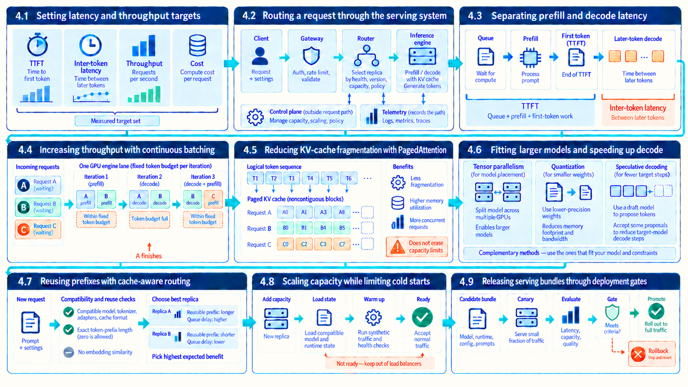
4.1 Setting latency and throughput targets
A checkpoint is only one ingredient of a user-facing release. The team cannot tune the serving design until it states success in workload and business terms. Latency, throughput, memory, quality, and cost measurements give engine settings a clear objective.
The engine cannot feed raw text directly to this language model. Before generating the first output, it converts raw text into the token units that enter and leave the model. The TTFT clock still begins at request admission:
- Tokenizer: The model-specific software that converts text to a sequence of token IDs, which are integers identifying entries in its vocabulary, and converts generated IDs back to text.
- Token: One unit of that sequence. Depending on the tokenizer, a word may be one token or several pieces, and punctuation or a special marker may also be a token.1
Token counts therefore do not equal word counts. With weights fixed for inference, the model uses the prompt IDs to select a next token ID, adds it to the sequence, and repeats. The tokenizer converts generated IDs back to text for the response.2 The prompt length, later cache length, output rate, and output-token cost in this chapter all count these units.
Prefill: Prompt processing that prepares the retained attention information used to generate an answer.
Decode: The generation loop after prefill. In the baseline used here, it extends each active answer by one next-token step at a time.
Key-Value (KV) cache: The attention key and value tensors retained from earlier tokens so decode does not recompute attention state for the whole prefix.
Service Level Objective (SLO): A measurable target for service behavior over a stated window, such as a p95 time-to-first-token below a threshold.3
Time to First Token (TTFT): Elapsed time from request admission until the first generated token becomes available.
Inter-Token Latency (ITL): Time between successive generated tokens during decode, commonly summarized as a distribution.4
Throughput: Completed useful work per unit time, such as output tokens per second per GPU or requests per second at a defined workload.
The business objective combines accepted work per GPU with latency, quality, safety, and availability. A benchmark that doubles tokens/s but violates the user’s ITL target does not improve that service.
\[ T_{\mathrm{request}} ≈ \mathrm{TTFT} + \left(N_{\mathrm{out}}-1\right) \cdot \mathrm{ITL} \tag{4.1}\]
\(T_{\mathrm{request}}\) is the time from admission to the last token, and \(N_{\mathrm{out}}\) is the number of generated tokens. The first token arrives after \(\mathrm{TTFT}\), and each of the remaining \(N_{\mathrm{out}}-1\) tokens adds one inter-token interval, here taken as the average \(\mathrm{ITL}\) for the request.
Example: prefill and decode latency for interactive serving
The illustrative timings follow one request that generates 80 tokens:
- Queue: The request waits 120 ms.
- Prefill: A 2,000-token prompt takes 280 ms including scheduling and first-token work in this simplified decomposition.
- First token: Queueing, prefill, scheduling, and first-token work produce a measured TTFT of 400 ms.
- Later tokens: The remaining 79 intervals average 22 ms, adding 1,738 ms.
- Total: 400 + 79 × 22 = 2,138 ms.
- Interpretation: Later-token decode dominates total time even though the first-token experience remains visible as a separate measure.
- Conclusion: A single latency number hides the stage that limits the request.
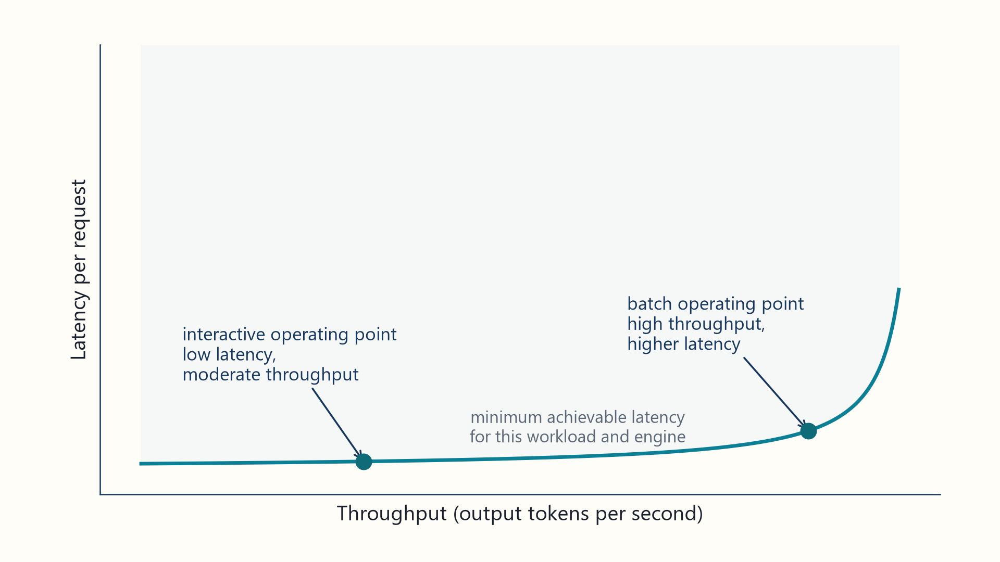
Latency distributions reveal behavior that a mean can hide. The p95 or p99 TTFT exposes queue spikes and long prompts, while ITL exposes decode instability. A complete throughput measurement states prompt and output lengths, concurrency pattern, engine configuration, GPU type, quantization, and whether routing and gateway overhead are included.
A serving benchmark usually reports tokens per second, while capacity plans such as the replica estimate of Section 1.5 need requests per second and cost. Dividing the sustained output-token rate by the average number of output tokens per request gives the request rate, provided the benchmark used the production mix of prompt and output lengths.
\[ C_{\mathrm{1M}} = \frac{P_{\mathrm{hour}} \cdot 10^{6}}{3600 \cdot R_{\mathrm{tok}}} \tag{4.2}\]
\(C_{\mathrm{1M}}\) is the compute cost of one million output tokens, \(P_{\mathrm{hour}}\) is the hourly price of the GPUs in one replica, and \(R_{\mathrm{tok}}\) is the replica’s sustained output-token rate while it meets its latency objectives. The factor 3,600 converts seconds to hours. Prompt tokens also consume prefill time, which the measured \(R_{\mathrm{tok}}\) already reflects when the benchmark includes realistic prompts.
Example: converting tokens per second to requests and cost
A one-GPU replica serving the 8-billion-parameter model is load-tested with the production prompt and output mix:
- Measured rate: The replica sustains 2,400 output tokens/s while p95 TTFT and ITL stay inside their objectives.
- Request rate: Answers average 300 output tokens, so 2,400 ÷ 300 = 8 requests/s. This is the per-replica figure used in the Section 1.5 sizing example.
- Cost: At an illustrative $4 per GPU-hour, one million output tokens cost $4 × 10⁶ ÷ (3,600 × 2,400) \(\approx\) $0.46.
- Sensitivity: If a policy change doubles the average answer to 600 tokens and the replica still sustains 2,400 output tokens/s within the same latency objectives, it serves 4 requests/s. At Section 1.5’s 75% utilization target, the 60-request/s workload then needs 20 demand replicas rather than 10. Keeping two spare replicas raises the starting deployment from 12 to 22. Compute cost per output token stays at about $0.46 per million only under that fixed-rate assumption. A changed prompt/output mix needs a new benchmark because its sustained token rate may change.
- Conclusion: Token rate, answer length, and latency objectives together set request capacity and cost. None of them alone does.
4.2 Routing a request through the serving system
The serving objective identifies what users and operators measure. Those measurements cross several components, and each component makes a different decision. One request passes through admission, routing, and execution, while fleet management and evidence collection run around that data path.
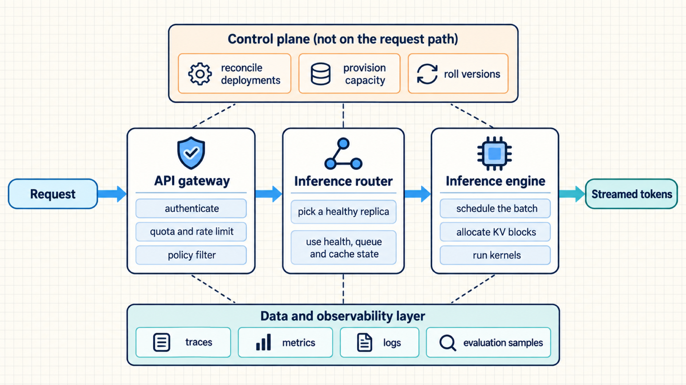
The request path can be divided into five responsibilities, which a deployment may combine:
- API gateway: The request-entry component that authenticates identities, validates request shape, enforces quotas and rate limits, applies policy filters, and records billing identity.
- Inference router: The component that selects an eligible engine replica using health, queue, model placement, and cache-state evidence.
- Inference engine: The runtime that tokenizes, schedules batches, allocates KV-cache blocks, executes kernels, and streams generated tokens.
- Control plane: The management component that reconciles desired model deployments, provisions capacity, distributes weights, rolls versions, and coordinates recovery.
- Data and observability layer: stores request traces, metrics, logs, audit events, evaluation samples, and release evidence.
The router lies on the live request path, and the control plane normally does not. Healthy replicas can continue serving during a temporary control-plane outage only if required routing/configuration state is available and their data-path dependencies do not require a synchronous control-plane lookup. Conversely, a router without fresh health or queue state can keep sending traffic to an overloaded or corrupt engine even when provisioning is healthy.
| Signal | First responsible component | Downstream action |
|---|---|---|
| Invalid authentication credential or exceeded quota | Gateway | Rejection before GPU work |
| Prefix already cached | Router | Estimate reuse and queue delay among eligible replicas |
| KV blocks nearly exhausted | Engine | Admission throttling, eviction, or pressure reporting |
| Sustained queue growth | Router + control plane | Hotspot avoidance and capacity scaling |
| Candidate bundle fails quality case | Release gate | Promotion stops, stable version retains traffic |
Request trace: excluding a replica with a stale health record
The trace follows one request through the gateway and router when one replica’s health information is too old to trust:
- The gateway accepts request
req-1842for serving bundlesb-27and records tenant and quota state. The router treats replicas A and B as compatible, but A’s health record is older than the 10-second freshness limit. - Replica A is excluded. Replica B receives the request, allocates KV blocks, streams tokens, and emits completion state. If every compatible health record is stale, the router returns a bounded unavailable response instead of guessing that an endpoint is healthy.
- Conclusion: The router’s decision is only as good as the freshness of the state it reads, so freshness is part of eligibility.
4.3 Separating prefill and decode latency
The request path identifies the engine as the component that turns admitted text into tokens. Inside the engine, queueing, prompt processing, and token generation stress different resources. The normal request path provides the baseline for stage-specific controls.
Prefill is the parallel forward pass over prompt tokens that computes hidden states and initializes attention key/value tensors. Decode then reads the retained state and, in the baseline autoregressive decoder discussed here, produces one next token per active sequence iteration. Speculative decoding, in Section 4.6, changes that pattern.
Prefill performs large matrix operations over many prompt tokens and is commonly compute-bound. Decode repeatedly streams model weights and KV state for a small amount of arithmetic per active sequence, so memory bandwidth and batch width often dominate.5 Queueing is controlled by admission and scheduler policy rather than a GPU kernel.
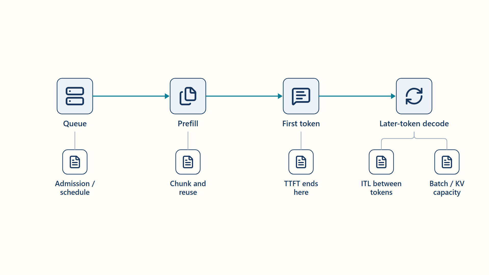
A useful latency diagnosis identifies the stage. Long queue delay suggests admission, capacity, or scheduling pressure. Long prefill suggests long prompts, poor prefix reuse, or insufficient prefill compute. High ITL suggests decode batching, memory bandwidth, cache pressure, or per-token synchronization.
Workload comparison: short-context versus long-context serving dynamics
Two requests with different prompt and answer lengths are limited by different stages:
- Long prompt: A 12,000-token prompt spends 1,450 ms in prefill and then emits 20 tokens at 18 ms between tokens.
- Long answer: A 600-token prompt spends 110 ms in prefill and then emits 180 tokens at 24 ms between tokens.
- Comparison: The first request is prefill-dominated, and the second is decode-dominated even though its prompt is much smaller.
- Control choice: Prefix reuse or more prefill capacity helps the first shape, while decode batch width and KV pressure are more relevant to the second.
- Conclusion: Prompt and output distributions select the useful optimization. Request count alone does not.
The grounded-answer service can produce the first shape when it includes many retrieved passages. In that workload, prefill time and prefix reuse may matter more than for a chat service with short prompts. The measured prompt distribution decides.
4.4 Increasing throughput with continuous batching
The request stages have distinct costs, while static batches force short sequences to wait for the longest member and leave holes after requests finish. Continuous batching recovers those slots through iteration-level admission and completion.
- Continuous batching: A serving scheduler that adds waiting sequences and removes finished sequences between decode iterations.6
The scheduler has a token budget, not merely a request-count limit. It chooses a mix of new prefill tokens and active decode tokens for the next iteration. Wider batches can increase throughput by reusing weight reads across sequences. Queue delay can fall as capacity improves or rise under saturation, and larger iterations can increase ITL. The outcome depends on admission, token budget, and workload.
- Chunked prefill: Splitting a long prompt into smaller prefill chunks so decode work from other requests can be interleaved.7
Chunked prefill protects interactive decode traffic from a single long prompt. The trade-off is more scheduling overhead and potentially less efficient prompt computation. Its production behavior depends on the actual mix of prompt sizes and latency classes.
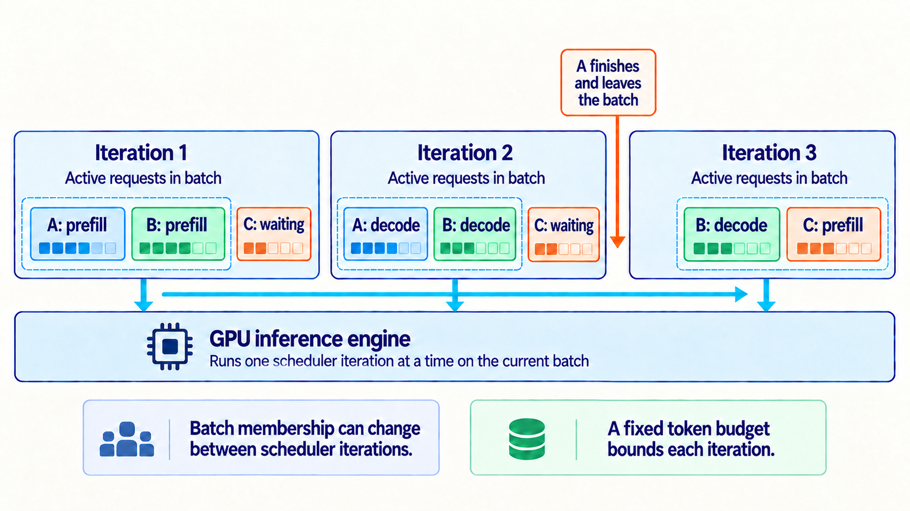
Batch iteration trace: continuous batching sequence
Three requests pass through three scheduler iterations under a fixed token budget:
- Iteration 1 admits requests A and B for prefill. Iteration 2 decodes A and B while request C waits because the token budget is full.
- A finishes after iteration 2. Iteration 3 removes A, admits C’s prefill chunk, and continues B’s decode. The active set changes without waiting for B to finish.
- Conclusion: The expected effect is fewer empty execution slots, and the measured guardrails are queue delay and ITL for each latency class.
Code example: Illustrative vLLM 0.10.2 V1 settings. Values are workload choices, not portable defaults.
# Illustrative vLLM 0.10.2 V1 settings, not portable defaults.
engine_args = {
"max_num_seqs": 128,
"max_num_batched_tokens": 8192,
"enable_chunked_prefill": True,
"gpu_memory_utilization": 0.90,
}Code walkthrough: continuous batching request iteration
Four engine settings bound the scheduler’s active set, its per-iteration work, and its memory:
- Sequence ceiling:
max_num_seqsbounds the number of active request sequences considered by the scheduler. - Token budget:
max_num_batched_tokenscaps prompt and decode tokens admitted to one iteration’s work. - Prefill policy:
enable_chunked_prefillpermits long prompts to be split so interactive decode work can interleave. - Memory reserve:
gpu_memory_utilizationcontrols how much device memory the engine may use for weights, KV blocks, and execution buffers. - Result: The four settings jointly determine admission, batch shape, queueing behavior, and KV-cache capacity. Changing one can alter the useful range of the others, so each configuration needs a workload test.
- Limits: These illustrative settings follow
vLLM0.10.2 V1 documentation.8 Availability and exact semantics depend on engine version. Other engines may offer comparable controls. Their interfaces need separate checks.
4.5 Reducing KV-cache fragmentation with PagedAttention
Continuous batching keeps execution slots occupied. Every active sequence also grows persistent attention state, and unpredictable lengths make contiguous preallocation wasteful. The memory estimate determines block allocation, prefix reuse, and whether compression or offload is useful.
The KV cache introduced in Section 4.1 grows with active sequences and retained context. Its approximate footprint is:
\[ M_{\mathrm{KV}} = 2 \cdot B \cdot L \cdot T \cdot d_{\mathrm{KV}} \cdot b \tag{4.3}\]
\(M_{\mathrm{KV}}\) is the cache size in bytes. The factor 2 counts keys and values, \(B\) is the number of active sequences, \(L\) is the number of layers, \(T\) is the number of cached tokens per sequence, \(d_{\mathrm{KV}}\) is the width of one token’s key (or value) vector in one layer, equal to the number of key/value heads times the head dimension, and \(b\) is bytes per stored element.
Example: KV-cache footprint for concurrent long contexts
This estimate sizes the cache for many long requests on one GPU:
- Model: The decoder has 32 layers and a width of 1,024 values for each key vector and each value vector per token. The estimate assumes unshared full contexts without per-device sharding.
- Traffic: Sixteen active sequences each retain 8,000 cached tokens.
- Precision: The FP16 or BF16 cache uses 2 bytes per stored element.
- Bytes: 2 × 16 × 32 × 8,000 × 1,024 × 2 = 16,777,216,000 bytes.
- Binary size: Approximately 15.6 GiB, before allocator metadata and model weights.
- Conclusion: Context length and concurrency can consume more memory than the model weights leave available for cache.
The same model shows how much room the cache actually gets. On an 80 GB GPU with gpu_memory_utilization set to 0.90, the engine may use 72 GB. The BF16 weights of the 8-billion-parameter model take 16 GB, and activations and execution buffers take an assumed 4 GB, leaving about 52 GB for KV blocks. Each cached token costs 2 × 32 × 1,024 × 2 = 131,072 bytes, so 52 GB holds about 397,000 tokens, or about 49 concurrent sequences of 8,000 tokens. Any memory saved on weights becomes room for more concurrent requests.
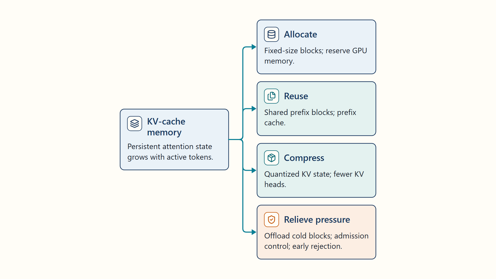
- Paged attention: An attention-memory scheme that stores KV state in fixed-size non-contiguous blocks and maps logical token positions to physical blocks.9
Paged allocation reduces internal fragmentation and makes partial growth, eviction, and sharing practical. Reference counts let several requests point to the same cached prefix blocks, and a block with no live references becomes eligible for eviction or reuse. A prefix cache may retain it after request completion rather than free it immediately.10 Prefix caching is valuable for shared system prompts, few-shot examples, and repeated conversation prefixes.
For variable-length traffic, the uniform \(B \times T\) factor becomes the sum of retained tokens across active sequences, \(\sum_i T_i\). Grouped-query or multi-query attention reduces \(d_{\mathrm{KV}}\) because several query heads share fewer key/value heads.11 The estimate still needs allocator metadata and partially filled final blocks to explain measured memory.
Memory trace: paged KV-cache block allocation
Two sequences share a prefix and then grow independently:
- Sequences A and B share two immutable prefix blocks. A is then assigned three additional blocks, while B is assigned one additional block and one half-filled final block.
- With immediate private-block eviction in this example, A’s three private blocks return to the free list when A finishes, and the shared prefix remains because B still references it. The half-filled block exposes bounded internal fragmentation without requiring one contiguous maximum-length reservation.
- Conclusion: Blocks let memory follow each sequence’s actual length and let shared prefixes be stored once.
Quantizing KV state reduces bytes per element and can improve capacity, but conversion or unsupported-kernel overhead may offset the gain. In an implementation that supports KV offload, colder state can move from GPU memory to host memory or storage. This extends capacity at the cost of transfer latency. Admission control and early rejection protect the cache before pressure becomes an out-of-memory failure.
4.6 Fitting larger models and speeding up decode
The KV budget above assumed that the weights fit on one GPU with room to spare. A 70-billion-parameter model in BF16 needs 140 GB for its weights alone, more than one 80 GB GPU holds. Even when a dense model fits, decoding repeatedly reads its weights to produce next tokens for the active batch, so memory bandwidth can limit interactive speed. Four techniques change these limits, and each also changes the serving bundle that must be evaluated and released.
With weight quantization, the engine stores weights in fewer bits, such as 8-bit integer or 8-bit floating-point formats (1 byte per weight) or 4-bit integers (half a byte plus per-group scale factors). The 70-billion-parameter model shrinks from 140 GB to about 70 GB at 8 bits. Decode then reads fewer bytes per token, which can raise throughput when the engine has efficient kernels for that format on the target GPU. Post-training methods such as GPTQ and AWQ choose the rounded values to limit the error they introduce, but the accuracy loss still depends on the model, the bit width, and the task.12 A quantized model is therefore a new candidate that passes the quality gates of Section 4.9 and Chapter 6 before release.
Tensor-parallel serving splits each layer’s weight matrices across the GPUs of one server, using the tensor parallelism introduced in Section 2.2 and worked through in Section 2.4. Each generation step requires repeated collective communication between those GPUs. The exact operations depend on the tensor layout, with all-reduce used in the described matrix-splitting arrangement. Frequent communication makes a fast interconnect such as NVLink important. One replica now occupies several GPUs, and its KV capacity depends on how weights, cache state, and buffers are distributed across them.
Example: placing a 70-billion-parameter model
Assume 80 GB GPUs used at 0.90, BF16 weights of 140 GB, 4 GB of activations and buffers per GPU, and a model with 80 layers and 8 key/value heads of width 128 (\(d_{\mathrm{KV}} = 1{,}024\)):
- Per-token KV cost: 2 × 80 × 1,024 × 2 bytes = 327,680 bytes.
- Two GPUs: 2 × 72 = 144 GB usable, minus 140 GB of weights and 8 GB of buffers, leaves no room for the cache. The placement fails.
- Four GPUs: 4 × 72 = 288 GB usable, minus 140 GB and 16 GB, leaves 132 GB, about 403,000 cached tokens or 50 sequences of 8,000 tokens.
- Two GPUs with 8-bit weights: 144 − 70 − 8 = 66 GB, about 25 sequences of 8,000 tokens, if the quantized model passes its quality gates.
- Conclusion: Weight format and tensor-parallel width together set how many concurrent long requests one replica holds, and therefore its cost per request.
Speculative decoding uses a small draft model to propose the next \(k\) tokens, then lets the large target model check all of them in one forward pass. The target keeps the longest run of proposed tokens that its acceptance rule allows. At the first rejection, it samples a replacement from the adjusted distribution defined by the method. If all \(k\) proposals pass, it samples one additional token from the target model’s next-token distribution. With the rejection-sampling rule of the original method, the output follows the target model’s distribution exactly.13 If each proposed token is accepted with probability \(\alpha\) independently, one target pass yields on average \((1-\alpha^{k+1})/(1-\alpha)\) tokens. With \(\alpha = 0.7\) and \(k = 4\), that is about 2.8 tokens per target pass instead of one. The gain shrinks when acceptance is low, when the draft model is slow, or when large batches have already made decode compute-bound, so the technique suits latency-sensitive traffic at moderate batch sizes.
Fine-tuning adapts a pretrained model to a task by further training on task examples. An adapter (LoRA) is a smaller set of low-rank matrices added to selected layers while the base weights stay frozen, so a tenant-specific or task-specific variant stores fewer trained weights than a full copy of the model.14 The actual size depends on the selected layers, matrix ranks, layer widths, and numeric format. An engine that supports adapters can serve many variants on one set of base weights. Each adapter’s identity then becomes part of the serving bundle, and the router of Section 4.7 must send a request only to replicas that have its adapter loaded.
4.7 Reusing prefixes with cache-aware routing
Paged allocation makes KV state reusable inside one engine. A fleet loses that benefit when a stateless load balancer sends every turn to a different replica. Stateful routing combines eligibility, cache affinity, and current load.
Round robin is a useful comparison baseline and can be a deployment policy when eligible replicas are equivalent and request history does not matter. LLM engines are often not equivalent at a moment in time: they can hold different model versions, adapters, prefix blocks, queue lengths, and free memory. In the routing policy proposed here, cache-aware routing first filters to healthy compatible endpoints, then estimates reusable prefix state and balances that benefit against queue pressure.15
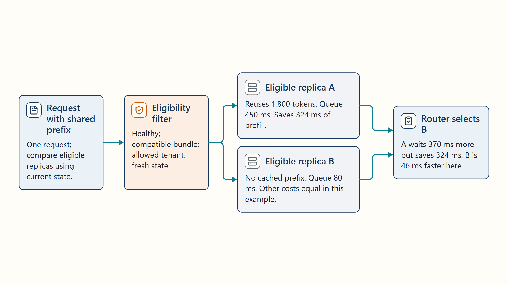
A cache hit avoids part or all of prefill, but an overloaded endpoint can erase the saved compute.
SGLang’s RadixAttention indexes reusable token prefixes in a radix tree and evicts unused cached leaves when capacity is needed.16 This reuse mechanism differs from PagedAttention’s block layout and from continuous batching’s execution schedule. Reuse still requires compatible model, tokenizer, adapter, and cache state, plus the permitted tenant boundary. The router therefore depends on timely engine state, bounded staleness, a fallback when state is missing, and observability that records why an endpoint was selected.
Eligibility is evaluated before preference: an endpoint must be healthy, serve the requested bundle, accept the request’s policy and context limits, and expose state no older than the freshness bound. Among eligible endpoints, estimated completion time combines queue delay, uncached prefill time, and decode time. Missing cache metadata contributes zero assumed reuse rather than an invented cache hit.
Example: prefix cache affinity versus queue delay
The router compares two eligible endpoints for one request with a long shared prefix:
- Endpoint A: Can reuse 1,800 prompt tokens but has an estimated 450 ms queue.
- Endpoint B: Has no prefix cache but an estimated 80 ms queue.
- Measured prefill rate: The engine saves 0.18 ms per reused token, so A avoids about 324 ms of prefill.
- Net comparison: A’s extra queue is 370 ms, larger than the 324 ms cache saving.
- Decision: Endpoint B has lower estimated latency for this request. The result changes if queue or prefill cost changes.
- Conclusion: Cache-aware routing is an optimization over measured time, not a rule that always chooses the largest prefix match.
4.8 Scaling capacity while limiting cold starts
Stateful routing uses the replicas that already exist. Sustained queue growth can require the control plane to add capacity, yet loading large weights from the storage chosen in Chapter 3 can take minutes. The controller must account for that delay before demand exceeds warmed capacity.
Autoscaling that reacts too strongly to raw one-second metrics can oscillate because one long prompt can temporarily consume free KV blocks or inflate TTFT. The controller described here uses a smoothed demand signal, a cooldown, and separate scale-up and scale-down policies.17 For the GPU-bound serving workload in this example, queue depth, waiting tokens, available cache blocks, and SLO error describe pressure more directly than CPU utilization. A deployment must confirm that relationship on its own workload.
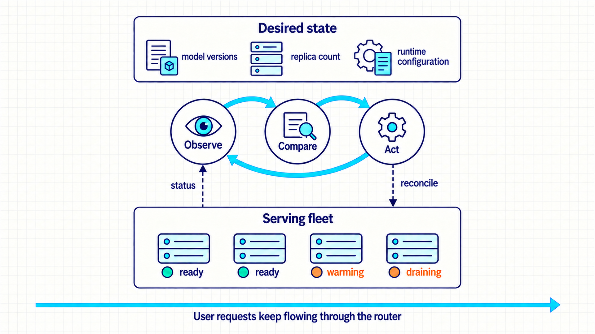
Example: replica demand with warm-up latency and cooldown
The controller must add capacity before demand arrives, because a new replica needs minutes to become useful:
- Measured capacity: One warmed replica sustains 6 requests/s for the target prompt-output mix while meeting both TTFT and ITL objectives.
- Smoothed demand: The five-minute demand signal rises to 25 requests/s, so 25 ÷ 6 requires five warmed replicas after rounding up.
- Current capacity: Three replicas are ready, and the controller requests three more: two to reach five demand replicas and one additional warmed replica for failure headroom.
- Warm-up timeline: Node allocation takes 70 seconds, image and weights take 95 seconds, kernel warm-up takes 25 seconds, and health stabilization takes 20 seconds: about 210 seconds before traffic.
- Hysteresis: Scale-down begins only after demand stays below three-replica capacity for ten minutes, avoiding a reversal during the 210-second scale-up delay.
- Conclusion: Autoscaling capacity depends on warmed service rate and response delay, not an instantaneous utilization sample.
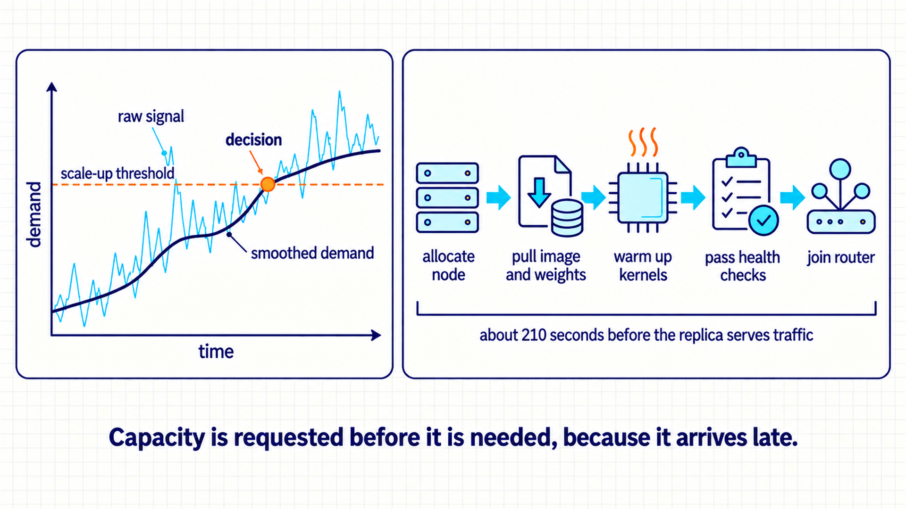
A cold start prepares a new serving replica before it can accept traffic. That work includes allocating a node, pulling the engine image, loading weights, initializing kernels or graphs, warming caches, passing health checks, and joining the router. Node-local NVMe can reduce remote-transfer cost, but host-memory caches and other storage paths can be faster. The useful choice is measured on the actual hardware, format, cache state, and contention.18 Shared filesystems or enhanced object storage can feed many nodes. Peer-to-peer distribution reduces a burst of simultaneous downloads against one storage endpoint. Quantized weights also shorten this transfer because fewer bytes move.
- Prefill/decode disaggregation: Placing prompt processing and token decoding in different worker pools and transferring KV state between them.19
Disaggregation lets compute-rich prefill workers and memory-bandwidth-oriented decode workers scale independently. Its success depends on a fast KV-transfer path, correct request handoff, compatible cache formats, and routing that keeps the two pools balanced. The transfer can erase the gain when interconnect latency or serialization is too high.
A measured decision compares the prefill/decode imbalance with KV-transfer cost. If separate pools save 90 ms of queue and compute time but serialization and transfer add 120 ms at the target context length, the combined request is slower and the unified engine remains the better placement for that workload.
4.9 Releasing serving bundles through deployment gates
The control plane can now add and specialize capacity. A production change remains unsafe if only the weight identifier is versioned or only HTTP health is checked. A safe release moves the complete serving bundle through performance, quality, safety, and rollback gates.
Section 1.2 introduced the serving bundle as the release unit. For this service, its immutable identity includes weights, tokenizer, engine image, hardware compatibility, quantization format, adapters, prompt defaults, runtime configuration, and release metadata.
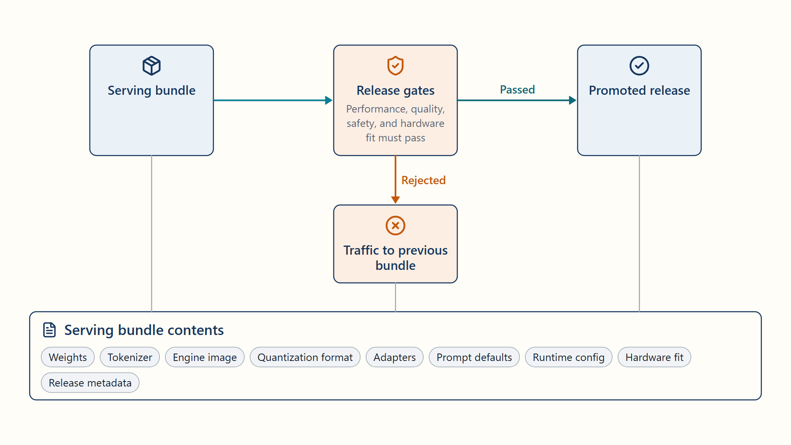
A tokenizer change, quantized kernel, sampling default, structured-output parser, or engine version can change behavior while weights remain unchanged. Bundle identity attaches benchmark and evaluation results to the actual deployable unit.
| Gate | What it catches | Evidence |
|---|---|---|
| Compatibility | Missing kernels, unsupported GPU, schema mismatch | Startup and interface tests |
| Performance | TTFT/ITL/throughput or memory regression | Fixed, ramp, spike, replay, and soak tests |
| Quality | Reasoning, factuality, or structured-output regression | Golden prompts and held-out evaluator cases |
| Safety/domain | Policy or customer-specific failure | Curated regression suites and red-team cases |
| Runtime | Unhealthy rollout, missing telemetry, failed rollback | Canary/shadow traces and rollback drill |
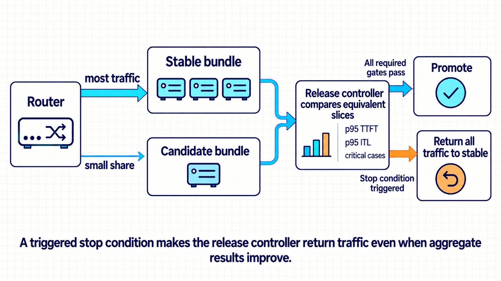
Blue/green deployment keeps stable and candidate environments available so traffic can switch between them after checks pass. A canary exposes the candidate to a small, controlled share of live traffic before wider promotion. The former prepares a controlled environment switch. The latter limits live exposure while collecting evidence, and a deployment can combine both. Synthetic and shadow tests can precede live exposure. The release gate compares performance and quality on equivalent workload slices.20 Rollback restores the whole bundle rather than only the weights. Chapter 6 develops the quality measurements these gates consume.
Example: canary traffic progression and health gates
A candidate bundle with faster first tokens is compared with the stable bundle on the same traffic:
- Comparable slice: Stable and candidate bundles each receive replayed requests stratified by prompt length, output length, tenant class, and retrieval use.
- Performance gate: Candidate p95 TTFT is 4% lower and p95 ITL is 2% higher, and both remain inside the predefined non-regression bounds.
- Quality gate: The candidate passes 499 of 500 critical cases, but the single failure is an authorization case with a zero-tolerance stop condition.
- Decision: Traffic returns to the stable bundle and the entire candidate bundle remains available for reproduction. Favorable aggregate latency does not override the critical failure.
- Conclusion: A canary decision combines equivalent workload slices with explicit stop conditions and whole-bundle rollback.
Chapter 4 summary
Key serving principles and trade-offs established in this chapter:
- Core mechanisms: TTFT measures delay to the first token, while ITL measures delay between later tokens. Stage traces separate queue, prefill, and decode time. Continuous batching rebuilds the batch every iteration under a token budget. Paged KV blocks let cache memory follow actual sequence length and support prefix reuse. Quantization and tensor-parallel placement affect whether a model fits and how much KV room remains. Speculative decoding can raise the number of tokens emitted per target pass.
- Governing trade-offs: Wider batches can raise throughput but also ITL. Cache affinity saves prefill but can lose to queue delay. Lower-precision weights free memory at a possible quality cost. More tensor-parallel GPUs can add KV room but also communication and cost.
- Failure modes & defenses: Freshness limits reject router state that is too old for the policy. Scaling policy accounts for warm-up time, with spare capacity or admission limits for demand that arrives too quickly. A whole-bundle canary with stop conditions limits initial request exposure. Shared state and lasting external side effects need separate controls.
Chapter checkpoint
Review Questions 16–22 in Appendix B, Section B.1, to test latency stages, batching trade-offs, KV-cache routing, and the latency, cost, KV-budget, and model-placement calculations before moving to retrieval.
Carry-forward result
The serving system now has an owned request path, a stage-specific latency model, managed KV memory, model-placement arithmetic, cache-aware routing, a cold-start plan, and an immutable release bundle.
Fixed weights cannot contain policy updates made after training. The grounded-answer service supplies current, authorized passages with each question so the model can use that new evidence. Chapter 5 builds the retrieval path.
Hugging Face. (n.d.). Tokenizer (Transformers main documentation). https://huggingface.co/docs/transformers/main/en/main_classes/tokenizer. The tokenizer reference describes subword token strings, IDs, special tokens, and conversion between strings and IDs. Exact boundaries and IDs depend on the model’s tokenizer.↩︎
Hugging Face. (n.d.). Text generation (Transformers main documentation). https://huggingface.co/docs/transformers/main/en/llm_tutorial. The text-generation guide shows tokenizer input IDs, generation of output tokens, and decoding those IDs to text. It describes a decoder-only path, not this book’s particular server’s streaming boundary.↩︎
Jones, C., Wilkes, J., & Murphy, N. (with Smith, C.). (2016). Service level objectives. In B. Beyer, C. Jones, J. Petoff, & N. R. Murphy (Eds.), Site reliability engineering: How Google runs production systems. O’Reilly Media. https://sre.google/sre-book/service-level-objectives/. The official SRE chapter defines objectives on selected indicators. The percentile, threshold, and window here are local choices, not an LLM standard.↩︎
Zhong, Y., Liu, S., Chen, J., Hu, J., Zhu, Y., Liu, X., Jin, X., & Zhang, H. (2024). DistServe: Disaggregating prefill and decoding for goodput-optimized large language model serving. In 18th USENIX Symposium on Operating Systems Design and Implementation (pp. 193–210). USENIX Association. https://www.usenix.org/conference/osdi24/presentation/zhong-yinmin. DistServe separates first-token and subsequent-token objectives. Per-request average time per output token is not the same statistic as an ITL distribution, and measurement boundaries must be stated.↩︎
Zhong, Y., Liu, S., Chen, J., Hu, J., Zhu, Y., Liu, X., Jin, X., & Zhang, H. (2024). DistServe: Disaggregating prefill and decoding for goodput-optimized large language model serving. In 18th USENIX Symposium on Operating Systems Design and Implementation (pp. 193–210). USENIX Association. https://www.usenix.org/conference/osdi24/presentation/zhong-yinmin. DistServe analyzes common prefill/decode bottlenecks. Batch, model, context, hardware, kernels, and parallelism can change the balance.↩︎
Yu, G.-I., Jeong, J. S., Kim, G.-W., Kim, S., & Chun, B.-G. (2022). Orca: A distributed serving system for transformer-based generative models. In 16th USENIX Symposium on Operating Systems Design and Implementation (pp. 521–538). USENIX Association. https://www.usenix.org/conference/osdi22/presentation/yu. Orca introduces iteration-level scheduling and selective batching. Its historical hardware/engine speedups are not predictions for current deployments.↩︎
vLLM project. (2025). Optimization and tuning (v0.10.2; V1 guidance). https://docs.vllm.ai/en/v0.10.2/configuration/optimization.html. vLLM 0.10.2 V1 documents decode-priority mixed batches and chunking to the token budget. This does not guarantee lower TTFT or ITL on every workload.↩︎
vLLM project. (n.d.). Engine arguments (v0.10.2). https://docs.vllm.ai/en/v0.10.2/configuration/engine_args.html. The cited vLLM 0.10.2 API documents the four example settings. Values here are illustrative. Other engines must be checked against their own interfaces.↩︎
Kwon, W., Li, Z., Zhuang, S., Sheng, Y., Zheng, L., Yu, C. H., Gonzalez, J. E., Zhang, H., & Stoica, I. (2023). Efficient memory management for large language model serving with PagedAttention. In Proceedings of the 29th Symposium on Operating Systems Principles (pp. 611–626). ACM. DOI:
10.1145/3600006.3613165. https://arxiv.org/abs/2309.06180. PagedAttention Sections 4.1–4.2 define block tables, sharing, and copy-on-write. Partly filled final blocks remain, so memory waste is reduced rather than eliminated.↩︎Zheng, L., Yin, L., Xie, Z., Sun, C., Huang, J., Yu, C. H., Cao, S., Kozyrakis, C., Stoica, I., Gonzalez, J. E., Barrett, C., & Sheng, Y. (2024). SGLang: Efficient execution of structured language model programs (arXiv:2312.07104v2). arXiv. Author manuscript. RadixAttention retains reusable prefixes and evicts eligible unused leaves. Zero active references permits eviction, not mandatory immediate deletion.↩︎
Ainslie, J., Lee-Thorp, J., de Jong, M., Zemlyanskiy, Y., Lebron, F., & Sanghai, S. (2023). GQA: Training generalized multi-query transformer models from multi-head checkpoints. In Proceedings of the 2023 Conference on Empirical Methods in Natural Language Processing (pp. 4895–4901). Association for Computational Linguistics. DOI:
10.18653/v1/2023.emnlp-main.298. https://aclanthology.org/2023.emnlp-main.298/. GQA defines intermediate KV-head counts, with MQA as one KV head. This is an architecture choice, not a free runtime change with guaranteed unchanged quality.↩︎Frantar, E., Ashkboos, S., Hoefler, T., & Alistarh, D. (2023). GPTQ: Accurate post-training quantization for generative pre-trained transformers. In The Eleventh International Conference on Learning Representations (ICLR 2023). https://arxiv.org/abs/2210.17323. Lin, J., Tang, J., Tang, H., Yang, S., Chen, W.-M., Wang, W.-C., Xiao, G., Dang, X., Gan, C., & Han, S. (2024). AWQ: Activation-aware weight quantization for LLM compression and acceleration (arXiv:2306.00978). Published in Proceedings of Machine Learning and Systems 6. https://arxiv.org/abs/2306.00978. Both methods report small accuracy loss at 3–4 bits on their tested models and tasks. The tested models and benchmarks do not establish the loss for another model or workload.↩︎
Leviathan, Y., Kalman, M., & Matias, Y. (2023). Fast inference from transformers via speculative decoding. In Proceedings of the 40th International Conference on Machine Learning (PMLR 202, pp. 19274–19286). https://arxiv.org/abs/2211.17192. The paper proves that its speculative sampling rule preserves the target model’s output distribution and derives the expected tokens per target pass under an independent acceptance rate. Measured speedups depend on the draft model, hardware, and batch size.↩︎
Hu, E. J., Shen, Y., Wallis, P., Allen-Zhu, Z., Li, Y., Wang, S., Wang, L., & Chen, W. (2022). LoRA: Low-rank adaptation of large language models. In The Tenth International Conference on Learning Representations (ICLR 2022). https://arxiv.org/abs/2106.09685. LoRA freezes pretrained weights and trains low-rank update matrices, reducing trainable parameters and checkpoint size. Serving many adapters at once is an engine capability outside the paper’s scope.↩︎
SGLang project. (n.d.). SGLang model gateway. https://docs.sglang.io/docs/advanced_features/sgl_model_gateway. The SGLang gateway documents health and cache/load policies. The exact eligibility and completion-time policy here is a design choice, not a universal router contract.↩︎
Zheng, L., Yin, L., Xie, Z., Sun, C., Huang, J., Yu, C. H., Cao, S., Kozyrakis, C., Stoica, I., Gonzalez, J. E., Barrett, C., & Sheng, Y. (2024). SGLang: Efficient execution of structured language model programs (arXiv:2312.07104v2). arXiv. Author manuscript. SGLang Section 3 and Algorithm 1 describe radix-tree prefix reuse and cache management. Its evaluations do not prove all routers benefit from the largest prefix match.↩︎
Kubernetes project. (n.d.). Horizontal Pod Autoscaling. https://kubernetes.io/docs/concepts/workloads/autoscaling/horizontal-pod-autoscale/. Kubernetes documents stabilization and scaling policies to reduce flapping. LLM signals and controller thresholds must still be measured and configured.↩︎
Fu, Y., Xue, L., Huang, Y., Brabete, A.-O., Ustiugov, D., Patel, Y., & Mai, L. (2024). ServerlessLLM: Low-latency serverless inference for large language models. In 18th USENIX Symposium on Operating Systems Design and Implementation (pp. 135–153). USENIX Association. https://www.usenix.org/conference/osdi24/presentation/fu. ServerlessLLM studies multi-tier loading and locality-sensitive scheduling. It does not establish node-local NVMe as the fastest source in every deployment.↩︎
Zhong, Y., Liu, S., Chen, J., Hu, J., Zhu, Y., Liu, X., Jin, X., & Zhang, H. (2024). DistServe: Disaggregating prefill and decoding for goodput-optimized large language model serving. In 18th USENIX Symposium on Operating Systems Design and Implementation (pp. 193–210). USENIX Association. https://www.usenix.org/conference/osdi24/presentation/zhong-yinmin. DistServe separates the phases and accounts for bandwidth-aware placement. KV transfer can outweigh the benefit, as the illustrative comparison shows.↩︎
Breck, E., Cai, S., Nielsen, E., Salib, M., & Sculley, D. (2017). The ML test score: A rubric for ML production readiness and technical debt reduction. In 2017 IEEE International Conference on Big Data (pp. 1123–1132). IEEE. DOI: 10.1109/BigData.2017.8258038. https://storage.googleapis.com/gweb-research2023-media/pubtools/4156.pdf. The ML Test Score recommends pre-serving tests, important-slice checks, canarying, and rollback. The exact bundle, thresholds, and stop rules are book policy, not a certified release standard.↩︎